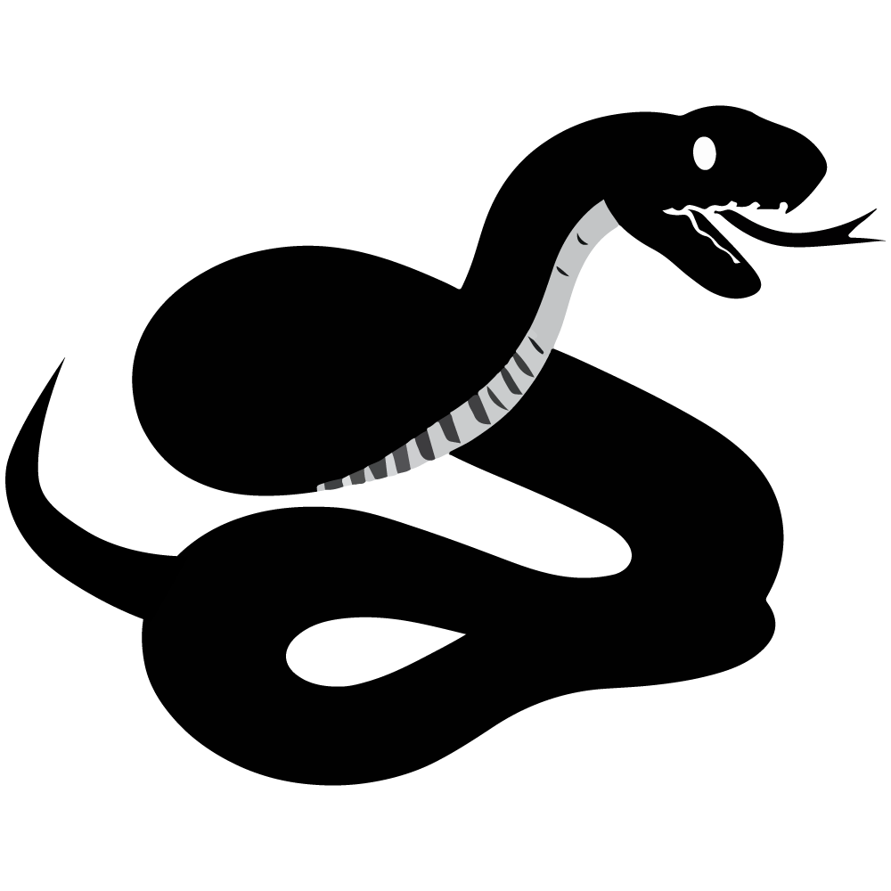

"Despues del final de la segunda guerra mundial el mundo fue dividido en 2, este y oeste. marcando inicio a la guerra fria"
Ambientado en 1964,sigue la misión de un agente de la CIA de la división FOX con el nombre clave de “Naked Snake”, entrenado por la heroína de la segunda guerra mundial conocida como The Boss.
¿Su misión?
Salvar a un científico ruso llamado Sokolov el cual desertó de la unión soviética para salvar a su familia, este acto de traición normalmente sería condenado con la muerte sin embargo, Sokolov desarrolló un prototipo de un arma con la potencia de una bomba nuclear llamada Shagohod.
"Misión Virtuosa.
Snake es enviado a territorio enemigo con poco más que una pistola y un cuchillo,deberá equiparse con lo que encuentre en la densa selva mientras intenta no ser detectado por el enemigo.
Operación “Snake Eater”
Snake logra infiltrarse con éxito y saca a Sokolov del campamento enemigo, sin embargo cuando estaba por llegar al punto de extracción se cruza con “Las Cobras” una unidad que jugó un papel importante en la segunda guerra lideradas ni más ni menos por The Boss. Esta traición rompe el corazón de Snake sin embargo no hay tiempo para lamentarse. La misión Virtuosa fracaso llevando que el mundo este a las puertas de una tercera guerra mundial,así nace la operación “Snake Eater” cuyo objetivo es ni más ni menos que acabar con Las Cobras y con The Boss, por supuesto dada su relación es Snake a quien le asignan esta misión.